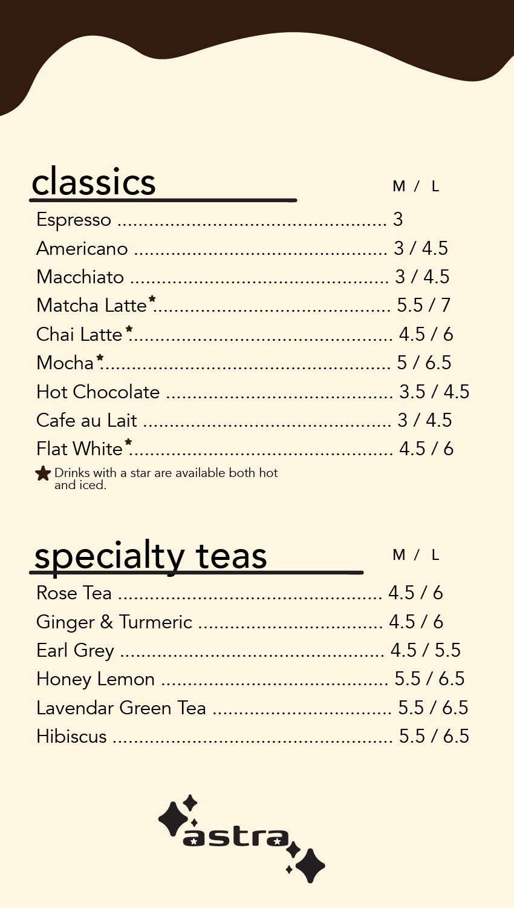
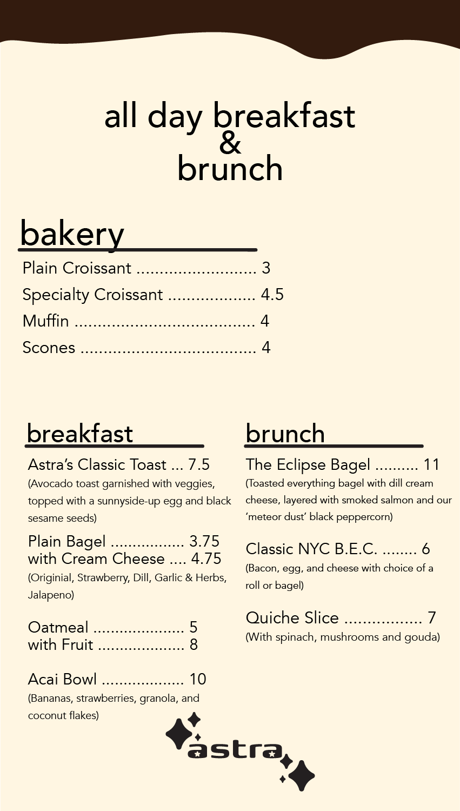
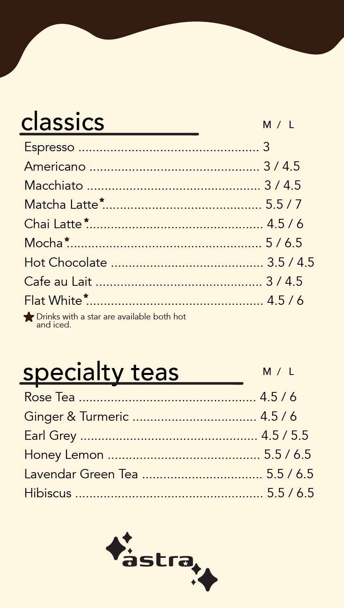
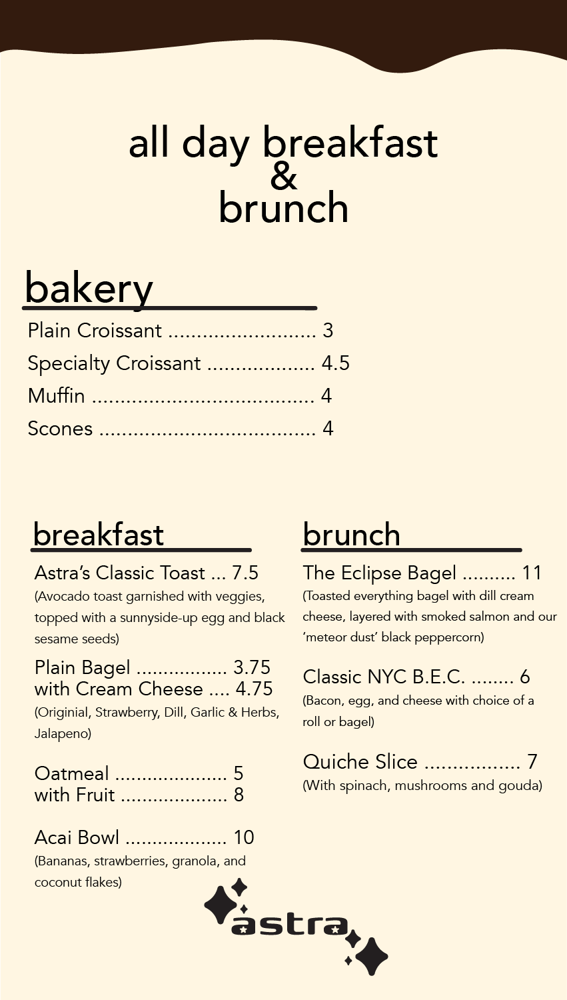

Brand Identity for "Astra" (July 2025)
For my final project for my Digital Design and Foundations class, I decided to create a visual identity for "Astra," an imaginary café that would be astrology themed. For this visual identity, I created a logo, several designs for zodiac caricatures (that would hypothetically be on merchandise), and a menu. These were created with Adobe Illustrator, Procreate and Photoshop.